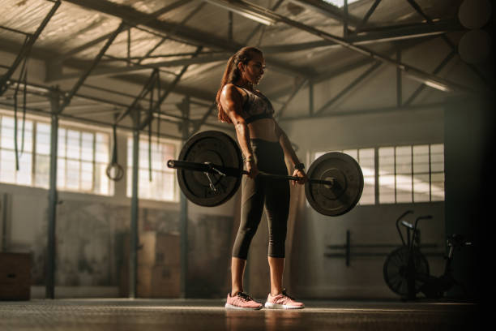

¿Quienes somos?
En CrossZfit creemos que el CrossFit es mucho más que un entrenamiento físico.
Es una comunidad de personas apasionadas por mejorar su salud y bienestar. Nuestro box es un espacio donde te sentirás motivado, apoyado y parte de una familia.
Nuestro lema:Saca tu mejor versión!
¿Qué nos hace diferentes?
Entrenadores certificados: Nuestro equipo de entrenadores altamente capacitados te guiará en cada paso del camino, asegurándose de que ejecutes los movimientos correctamente y alcances tus objetivos.
Comunidad inclusiva: Creemos en un ambiente donde todos son bienvenidos, sin importar su nivel de experiencia.
Entrenamientos variados: Nuestros WODs (Workouts of the Day) están diseñados para desafiarte y mantenerte motivado, siempre con opciones para todos los niveles.
Enfoque en el bienestar integral: Además del entrenamiento físico, nos preocupamos por tu salud mental y emocional. Organizamos eventos sociales y actividades que fomentan el compañerismo y el bienestar.
Únete a nuestra comunidad y descubre el poder transformador del CrossFit.
Head Coach - Gonzalo Becco CF-L2
Coach - Javier Rodriguez CF-L1
Coach - Nazarena futura CF-L1
Objetivos
Promover un estilo de vida saludable: Enfatiza que tu box no se trata solo de construir músculos, sino de fomentar hábitos saludables a largo plazo.
Crear una comunidad fuerte: Destaca la importancia de la comunidad en tu box y cómo fomentas la conexión entre los miembros.
Ayudar a las personas a alcanzar sus metas: Muestra que estás comprometido a ayudar a cada miembro a alcanzar sus objetivos personales, ya sean perder peso, ganar fuerza o mejorar su rendimiento deportivo.
Modalidad
Existen varias modalidades de clases 2,3,5 veces por semana, la duracion es de 1 hora. Para asistir deberas agendarte previamente. La estructura tipica de una clase se compone de 3 etapas:
1 - Calentamiento (Warm up) Objetivo:Preparar el cuerpo para el entrenamiento, aumentando la temperatura corporal, la frecuencia cardíaca y la movilidad articular.
2- Desarrollo de habilidades (Skill) Objetivo: Mejorar la técnica en movimientos específicos, ya sea una nueva habilidad o perfeccionar una existente.
3- WOD (Workout of the day) Objetivo: El entrenamiento principal, diseñado para desafiar al atleta en todos los aspectos del acondicionamiento físico.
Warm up

Composición: Generalmente incluye:
* Movilidad dinámica: Ejercicios de movilidad articular para preparar las articulaciones para el movimiento.
* Activación muscular: Ejercicios ligeros para activar los músculos que se utilizarán en el WOD.
* Calentamiento cardiovascular: Actividades como saltar la cuerda, correr o remar para elevar la frecuencia cardíaca.
* Calentamiento cardiovascular: Actividades como saltar la cuerda, correr o remar para elevar la frecuencia cardíaca.
* Ejercicios específicos: Movimientos relacionados con el WOD del día para familiarizar al cuerpo con los patrones de movimiento.
Skills
Composición: Se enfoca en un movimiento o habilidad en particular, como:
* Gimnasia: Dominadas, muscle-ups, planchas, etc.
* Peso libre: Sentadillas, press de banca, levantamientos olímpicos, etc.
* Otros: Escalada de cuerda, kettlebells, etc.
* Repetición de movimientos: Se realizan repeticiones del movimiento focalizado para mejorar la técnica y la fuerza.
Wod